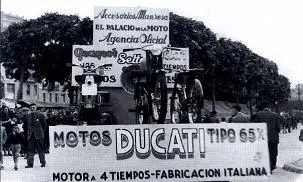

Ducati nació en 1926 en Bolonia, Italia, fundada por la familia Ducati como una empresa de componentes electrónicos. No fue hasta después de la Segunda Guerra Mundial que comenzaron a producir motocicletas, empezando con la pequeña "Cucciolo", un motor auxiliar para bicicletas que tuvo un gran éxito. Durante las décadas de los 50 y 60, Ducati se consolidó como una marca innovadora en el mundo de las motos, destacándose por su ingeniería avanzada y su pasión por la velocidad. En los años 70, introdujo su icónico motor L-twin y el sistema de distribución desmodrómica, dos elementos que siguen siendo parte clave del ADN de Ducati. A lo largo de su historia, Ducati ha triunfado en competiciones como el Mundial de Superbike y MotoGP, ganando prestigio internacional por sus motos potentes, elegantes y tecnológicamente avanzadas. Hoy, Ducati representa la combinación perfecta entre rendimiento, diseño italiano y espíritu racing. No es solo una marca: es una experiencia sobre dos ruedas.
